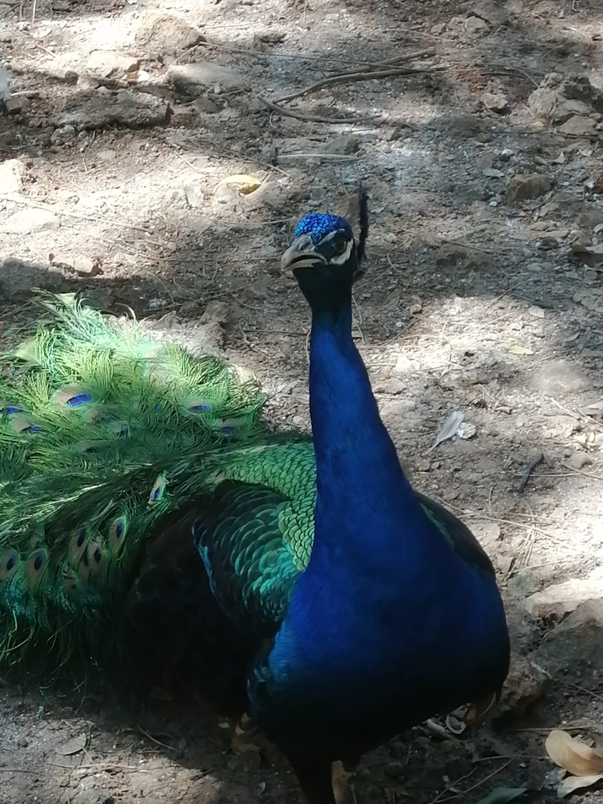

El Parque Zoológico del Centenario, conocido como "El Centenario", cuenta con vairas instalaciones
Acuario:
esta instalacion se un lugar donde puedes conocer a las especies marinas que se encuentran en fondo del agua para que puedeas conocerlos
herpetario:
aqui conoceras a todos los reptiles que nos acompañan tenemos entre tortugas caimanes serpientes y camaleones
aviario
aqui estarn todas las aves no rapaces podras entrar a conocerlos y estar cerca de ellos para admirarlos

primateria
aqui conoceras a todos los pirmates chimpaces y monos que tenemos en nuestra parque conocelos y ve como se divierten todos